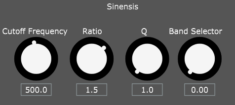

Show Code
I : M : 1 : Same for script 2, 3, 4 with incremented degree You can change A to Change the root
Your browser does not support the audio element.
February 27, 2023 J U C E

February 27, 2023 V C V ~ D E V E L O P M E N T
Midi input for the root frequency
Band quantization with scales
Manual access to each band
Split Global Q and Q tone, with multiple mode (odd/even, high/low, etc..)
same thing for Gain of each band instead of a simple "number of band Param"
Q and gain link (in Ableton eq 8 way)
~ C O M P O S I T I O N ~
Your browser does not support the audio element.
January 25, 2023 V C V ~ D E V E L O P M E N T
~ C O M P O S I T I O N ~
Your browser does not support the audio element.
January 23, 2023 V C V ~ D E V E L O P M E N T
January 18, 2023 ~ C O M P O S I T I O N ~
Morgasmatron channel A saturation switch
Morgasmatron Q-drive
Magneto rec-lvl
Veils level
Black Hole In level
Black Hole RIP algorithm
Fun stuff !
Your browser does not support the audio element.
V C V ~ D E V E L O P M E N T
here is the link to the plugin.
January 15, 2023 ~ C O M P O S I T I O N ~
Your browser does not support the audio element.
January 13, 2023 V C V ~ D E V E L O P M E N T
~ C O M P O S I T I O N ~
Your browser does not support the audio element.
December 31, 2022 V C V ~ D E V E L O P M E N T
Sometimes it's hard to find captions
Your browser does not support the audio element.
I may push people to arrange the module in the order I want by using a varying grey scale on each module. Poussant ainsi les gens à les organiser du plus foncé au plus clair.
Too bad, I don't have any idea of how they are supposed to be layed out. Anyway, I don't have any utility or practical mixer. Without adding other modules, I think most people wouldn't use them.
~ M E T A ~
December 24, 2022 V C V ~ D E V E L O P M E N T
Comparison of old and new panels
I realized that I have not posted any audio from my modules yet ! So here it is, Volubilis to Sinensis:
Your browser does not support the audio element.
December 17, 2022 V C V ~ D E V E L O P M E N T
T A P E ~ H I S T O R Y
Each ring is a head
December 6, 2022 V C V ~ D E V E L O P M E N T
Notice the sick NOI logo from Shanti Heath
Started the development of Volubilis, a noise source generating two channels of grain/rain plus one generating normal Noise.
I got a spare parameter that I doesn't know what to do of, it shouldn't have to much impact on the sound because I don't have the space to add modulation input and trim. But important enough to have a big knob, I think it's a design mistake, more try will lead to the answer.
As of now it is used on an internal modulation source mimicking wind movement, each clock tick generate a new value to reach, alternating up and down. The parameter set the clock frequency.
I think this can be transformed to a full-fledged CV module. it's not really in my philosophy of modular to have a mechanism that has no input, no output and a single parameter.
I wanna try a looping noise with parameter for the size of the buffer, were each noise buffer is played two time, is a frequency going to emerge ?
Noise output used as a test out for the wind CV
Also made a new Panel for Wilt, my first module, it's a weird one (not in a good sense).
Still need a symbols for the vca (the white circle on the signal path)
November 26, 2022 M O D U L A R ~ R E S E A R C H
Your browser does not support the audio element.
November 20, 2022 M O D U L A R ~ R E S E A R C H
Your browser does not support the audio element.
November 16, 2022 V C V ~ D E V E L O P M E N T
It's getting better
Big knobs are neat
November 10, 2022 ~ E L E C T R O N I C S ~
Your browser does not support the audio element.
I haven't waited for the ink to dry
November 09, 2022 M O D U L A R ~ R E S E A R C H
Your browser does not support the audio element.
~ C O M P O S I T I O N ~
Your browser does not support the audio element.
V C V ~ D E V E L O P M E N T